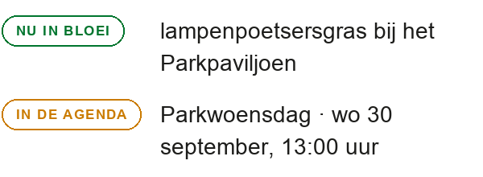

Beheer · handtekeningen
Handtekeningen beheren
Maak een handtekening voor iedereen in het team en kies welk evenement je onder de aandacht brengt.
Inloggen als beheerder
Gebruik het bestaande beheerwachtwoord van het Park.
Je blijft ingelogd zolang dit tabblad open is.
Personen
Iedere persoon heeft een eigen link om de handtekening te kopiëren.
Persoon toevoegen
Gebruik zakelijke gegevens: handtekeningen en ingevulde gegevens komen op de openbare website.
Voorbeeld op e-mailformaat
Schuif het voorbeeld opzij om de hele handtekening te bekijken.
De kleur van het woordbeeld
Eén instelling voor alle handtekeningen.
Welk evenement komt in de handtekening?
Standaard het eerstvolgende evenement. Zet een ander evenement vast tot het afgelopen is.
Gepubliceerd voorbeeld
